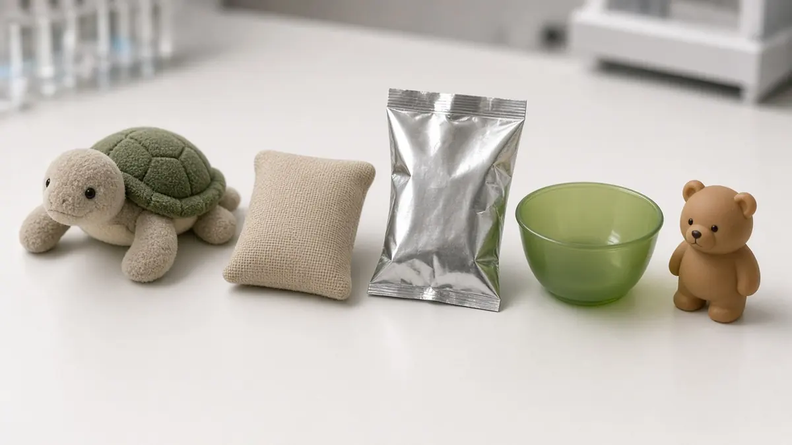

Research
Researchers teach a Unitree G1 with a 20-joint hand to catch objects it never saw in training
Short answer: Researchers from UC San Diego and Harvey Mudd College have trained a seated Unitree G1 humanoid to catch thrown objects underhand and overhand using only one camera on its head, according to a paper titled Catch It All! posted to arXiv on 28 October 2026. The policies were trained only in simulation and then run on the real robot without extra tuning, and they caught 9 everyday objects that were never used in training.

In real tests, the robot caught objects in 38.9% of underhand tosses and 36.1% of overhand tosses, according to the paper. The test objects included plush toys, a sandbag, a squashable bag of chips and rigid toys that bounce, and each was thrown at short, medium and long range. For comparison, the authors say a human teleoperator using a two-arm control rig caught only 3 of 44 tosses, which they give as the reason for training with reinforcement learning in simulation instead of learning from demonstrations.
According to the paper and the project page, the setup uses a 20-joint House of Dextra hand, a ZED 2i stereo camera mounted on the robot's head and an object tracker called SAM2-Tiny. The team says the key ideas were a reward that pulls every fingertip toward the object's surface and training schedules that keep the arm within its limits. The authors say these safety-aware schedules let the policy act quickly close to hardware limits, including wrist torque limits as low as 5 newton metres.
The authors say they have not yet applied the method to whole-body control and plan to do so next. The project page links to a public code repository. For more research on the same robot family, visit our Unitree hub and research hub, and for another take on robot hands see our story on Samsung's five-finger hands.